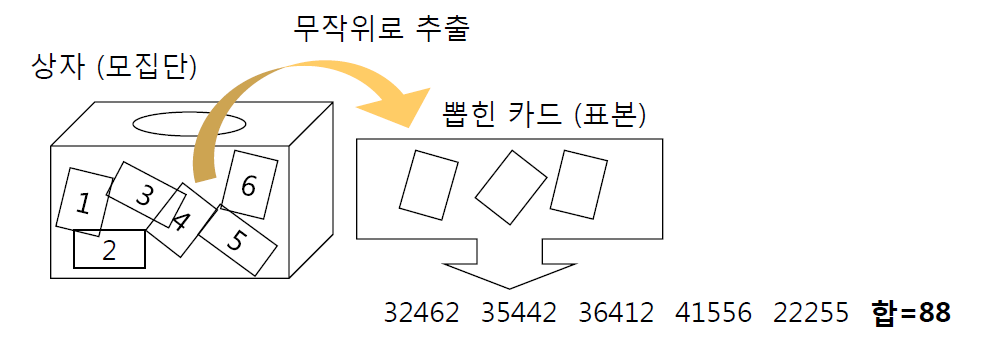
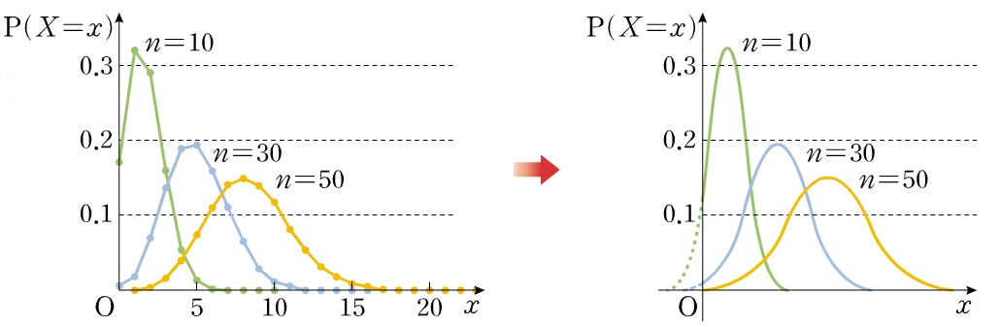
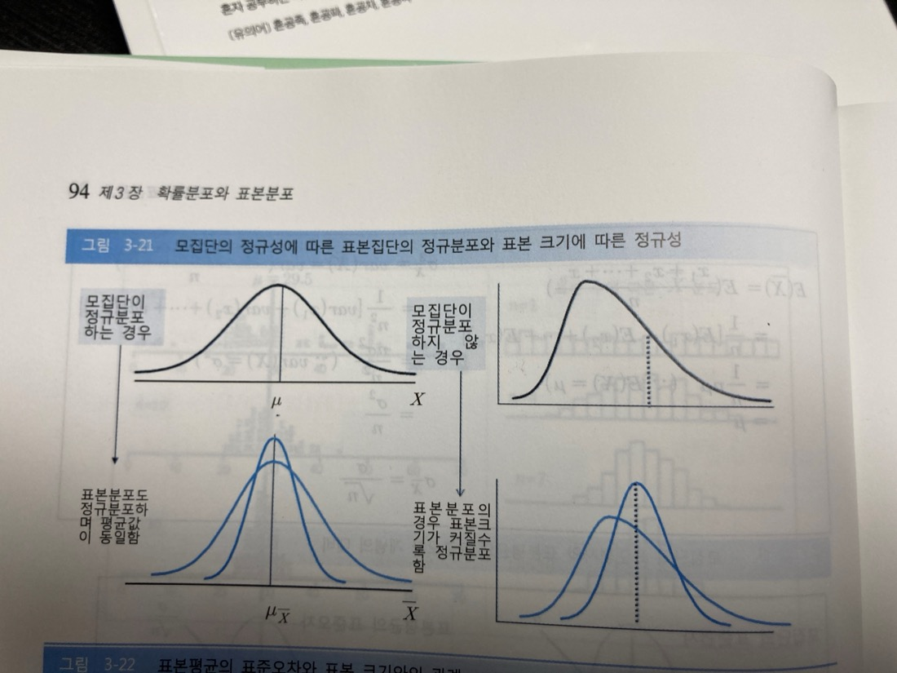
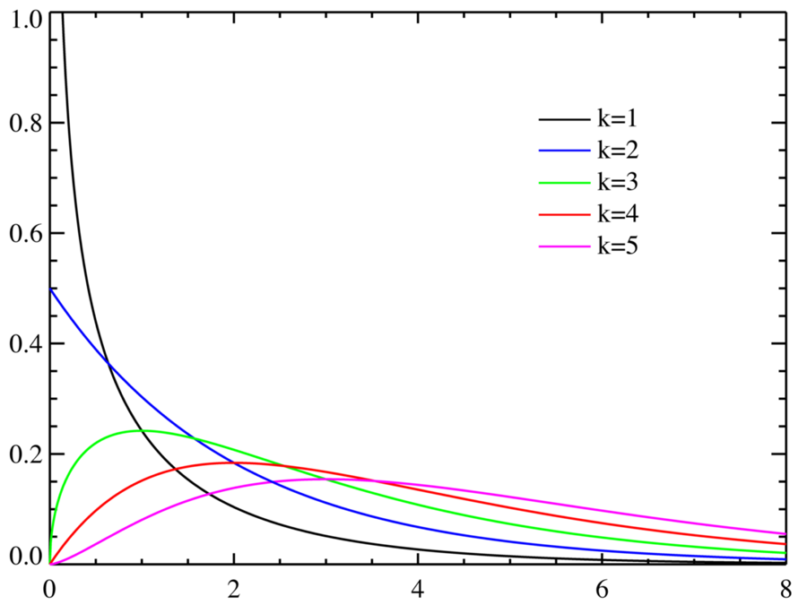
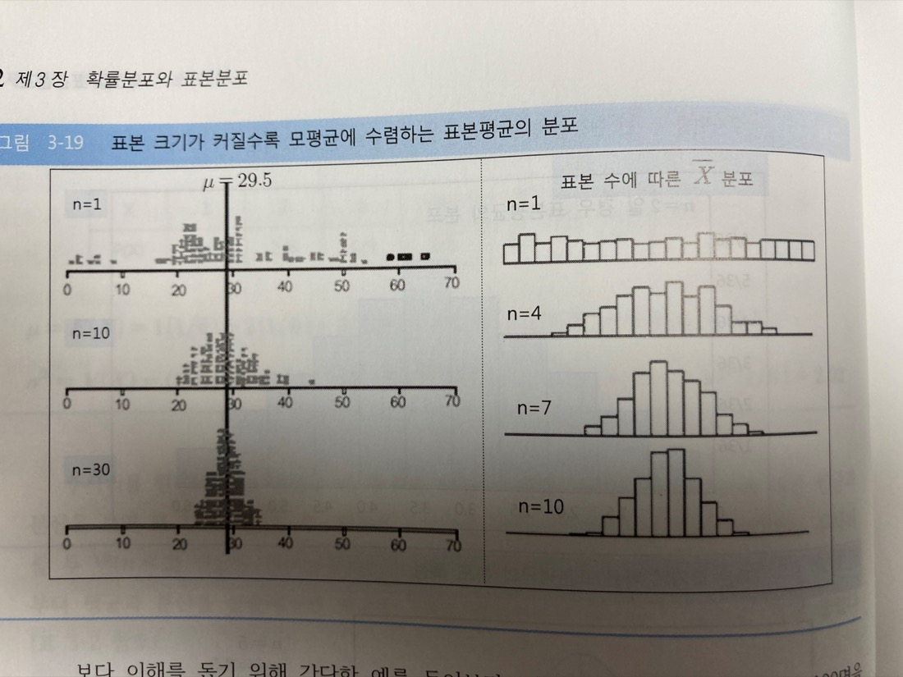

10강. 대수의 법칙과
중심극한정리
지난 강의 요약
- 한 사건이 발생할 때 다른 사건이 일어날 수 없는 경우 두 사건 간 관계를 상호배반(mutually exclusive)이라 한다.
- 둘 중 하나의 사건이 발생할 확률을 두 사건이 각각 발생할 확률의 합과 두 사건이 동시에 발생할 확률의 차로 나타내는 것을 확률의 덧셈법칙이라 한다.
- 한 사건이 발생했다는 조건 하에서 다른 사건이 발생할 확률을 조건부확률이라 한다.
- 두 사건이 모두 일어날 확률을 하나의 사건이 일어날 확률과 그 사건이 일어났다는 조건 하에서 다른 하나의 사건이 일어날 조건부확률의 곱으로 나타낸 것을 확률의 곱셈법칙이라 한다.
- 한 사건이 발생할 때 다른 사건이 일어날 확률이 변하지 않는 경우 두 사건 간의 관계를 독립(independent)이라 하며, 두 사건 간 관계가 독립일 경우 확률의 곱셉법칙은 두 사건이 각각 일어날 확률의 곱으로 나타낼 수 있다.
- 조건부확률을 확률의 곱셈법칙에 따라 변환하면 사전에 설정한 (주관적 견해의) 확률을 새롭게 주어진 정보를 활용해 업데이트 시킬 수 있는 베이즈 정리를 도출할 수 있다.
확률변수와 확률분포
(random variable)
표본공간에서 정의되는 각 사건들에 대응하는 실수 값
(probability distribution)
확률변수가 출현할 가능성, 즉 사건이 발생할 가능성에 대한 분포
확률분포의 종류
확률분포를 알려면 우리가 직면한 데이터, 즉 확률변수가 어떻게 나타난 사건인지 고민해보아야 한다!
정규분포 (normal distribution)
평균 $\mu$, 표준편차 $\sigma$인 변수 X에 대한 정규분포
$X \sim N(\mu,\ \sigma^{2})$
$f(X)=\dfrac{1}{\sqrt{2\pi}\sigma}\,e^{-\frac{1}{2}\left(\frac{X-\mu}{\sigma}\right)^{2}}$
$(-\infty < x < +\infty)$
정규분포의 사례
- 저울의 측정오차
- 키와 몸무게의 분포
- 식물의 꽃잎 개수
:
정규분포 (normal distribution)
평균 $\mu$, 표준편차 $\sigma$인 변수 X에 대한 정규분포
$X \sim N(\mu,\ \sigma^{2})$
$f(X)=\dfrac{1}{\sqrt{2\pi}\sigma}\,e^{-\frac{1}{2}\left(\frac{X-\mu}{\sigma}\right)^{2}}$
$(-\infty < x < +\infty)$
- 평균을 중심으로 좌우 대칭 (symmetric)
- 종 모양 (bell-shaped)
- 봉우리가 하나 (single-peaked)
평균과 표준편차에 따라 중심과 퍼진 정도는 달라지지만
전반적인 모양은 그대로이며,
평균±n표준편차의 비율도 일정함
정규분포 (normal distribution)
평균 $\mu$, 표준편차 $\sigma$인 변수 X에 대한 정규분포
$X \sim N(\mu,\ \sigma^{2})$
$f(X)=\dfrac{1}{\sqrt{2\pi}\sigma}\,e^{-\frac{1}{2}\left(\frac{X-\mu}{\sigma}\right)^{2}}$
$(-\infty < x < +\infty)$
가) 표준편차가 같고 평균값이 다른 경우 (μ1 < μ2 < μ3, σ1 = σ2 = σ3)
나) 표준편차가 다르고 평균값이 같은 경우 (μ1 = μ2 = μ3, σ1 > σ2 > σ3)
베르누이 분포 (Bernouii distribution)
P의 성공확률로 결과가 둘(성공/실패)로 나뉘는 사건, 즉 0과 1을 확률변수로 갖는 확률분포
$X \sim Bernouii(p)$
베르누이 시행 (Bernouii trial)
결과가 둘(성공/실패, 합격/불합격)로 나뉘는 시행 (예. 동전의 앞면/뒷면) → 성공확률 p가 존재
베르누이 확률변수 (Bernouii random variable)
베르누이 시행에서 성공에 1, 실패에 0을 대응시킨 확률변수
베르누이 분포의 확률질량함수
P의 성공확률에 따라 0 혹은 1이 나타날 확률
$P(X_{1}=x)=p^{x}(1-p)^{1-x}$
베르누이 확률변수 (Bernouii random variable)
베르누이 시행에서 성공에 1, 실패에 0을 대응시킨 확률변수
이항 분포 (Binomial distribution)
성공확률이 p인 베르누이 시행을 n번 반복하여 얻은 베르누이 확률변수의 합을 확률변수로 갖는 확률분포
$Y \sim B(n,\ p)$
- 성공확률이 p로 일정한 베르누이 시행으로 얻은 베르누이 확률변수: $X_{1}$
- 베르누이 시행을 n번 반복: $X_{1},\ X_{2},\ X_{3},\cdots,X_{n}$
- n번 시행한 베르누이 확률변수의 합을 그 값으로 갖는 새로운 확률변수: $Y = X_{1}+X_{2}+X_{3}+\cdots+X_{n}$
- 새로운 확률변수 Y: 이항확률변수
- 이항확률변수 Y가 따르는 확률분포: 이항분포 (binomial distribution)
이항 분포의 확률질량함수: 이항공식
성공확률이 p인 베르누이 시행을 n번 시행했을 때 k번 성공할 확률
$P(X=k)=\dfrac{n!}{k!(n-k)!}\,p^{k}(1-p)^{n-k}$ (k=0,1,…,n)
이항계수
= n번의 시행에서 조합가능한 경우의 수
하나의 조합이 나타날 확률
= 모든 조합에서 동일
이항공식의 적용 조건 (셋 중 하나라도 위배되면 적용되지 않음)
- n은 미리 정해져 있다.
- 매 번의 베르누이 시행은 독립이다.
- p는 매 시행마다 동일하다.
이항공식의 적용사례
- 동전을 네 번 던질 때 앞면이 한번 나오는 확률
- 주사위를 열 번 던질 때 1이 세 번 나올 확률
- 타율 3할 타자가 100번 타석에 들어설 때 안타를 50번 칠 확률
- 5지 선다인 기말고사 10문제를 모두 찍을 때 50점 이상 맞을 확률
- 내가 산 주식이 앞으로 5일 간 매일 오를 확률
- 한 장의 붉은 카드와 아홉 장의 푸른 카드가 든 상자에서 다섯번 복원추출 할 때 붉은 카드를 두 장 뽑을 확률
:
이항공식의 적용사례
한 장의 붉은 카드와 아홉 장의 푸른 카드가 든 상자에서 다섯번 복원추출 할 때 붉은 카드를 두 장 뽑을 확률
1. 가능한 모든 경우를 찾아냄 = 5개 중에서 2개를 뽑는 조합
RRBBB, RBRBB, ...
2. 각 경우의 확률을 계산
RRBBB $=\frac{1}{10}\times\frac{1}{10}\times\frac{9}{10}\times\frac{9}{10}\times\frac{9}{10} =\left(\frac{1}{10}\right)^{2}\left(\frac{9}{10}\right)^{3}$
RBRBB $=\frac{1}{10}\times\frac{9}{10}\times\frac{1}{10}\times\frac{9}{10}\times\frac{9}{10} =\left(\frac{1}{10}\right)^{2}\left(\frac{9}{10}\right)^{3}$
:
3. 덧셈법칙으로 구한 확률을 모두 더함
조합가능한 경우의 수 $\times \left(\frac{1}{10}\right)^{2}\left(\frac{9}{10}\right)^{3}$
이항계수 = 조합가능한 경우의 수
$\mathrm{nC_{k}}=\binom{n}{k}=\dfrac{n!}{k!\,(n-k)!}$
확률변수의 기대값, 분산, 표준편차
확률변수의 기대값
여러분은 한 번만 참여할 수 있는 복권 게임을 한다.
참가비는 0원이고, 다음과 같은 규칙이 있다.
| 결과 | 상금 | 확률 |
|---|---|---|
| 1등 | 10,000원 | 0.1 |
| 2등 | 1,000원 | 0.2 |
| 꽝 | 0원 | 0.7 |
Q) 게임을 할 때 여러분은 얼마를 벌 것이라고 기대하는가?
확률변수의 기대값, 분산, 표준편차
기대값
특정한 확률분포를 따르는 확률변수가 가질 것으로 기대되는 값 → $E(X)=\mu$
분산
확률변수와 기대값 간의 차이, 즉 편차의 제곱이 가질 것으로 기대되는 값 → $VAR(X)=E\!\left[(X-\mu)^{2}\right]$
표준편차
실현된 값이 기대값과 차이가 나는 정도의 표준적인 크기 = 기대값으로 나타낸 표준편차 = √분산
확률변수의 기대값, 분산, 표준편차
Q) 5가 한 장, 1이 세 장 들어있는 상자에서 하나의 카드를 추출할 때 기대값, 분산, 표준편차는?
- 기대값 $=\sum 값 * 값의\ 확률 = 1*3/4 + 5*1/4 = 2$ = 상자에 들어있는 값의 평균
- 분산 $=\sum(값-기대값)^{2} * 값의\ 확률 = (-1)^{2}\times\left(\frac{3}{4}\right)+3^{2}\times\left(\frac{1}{4}\right)=3$ = 편차 제곱의 평균
- 표준편차 $=\sqrt{\sum(값-기대값)^{2} * 값의\ 확률} = \sqrt{3}$ = 분산의 제곱근
확률변수의 기대값, 분산, 표준편차
기대값
특정한 확률분포를 따르는 확률변수가 가질 것으로 기대되는 값 → 장기적으로 얻게 되는 값 → $E(X)=\mu$
분산
확률변수와 기대값 간의 차이, 즉 편차의 제곱이 가질 것으로 기대되는 값 → $VAR(X)=E\!\left[(X-\mu)^{2}\right]$
표준편차
실현된 값이 기대값과 차이가 나는 정도의 표준적인 크기 = 기대값으로 나타낸 표준편차 = √분산
베르누이 확률변수의 기대값과 분산
성공확률이 p인 베르누이 시행에 따른 베르누이 확률변수를 X라고 할 때
$X \sim Bernouii(p)$
기대값 = $E(X) = p$
분산 = $Var(X) = p(1-p)$
이항확률변수의 평균과 분산
X가 성공확률이 p인 베르누이 시행을 n번 반복하여 얻은 베르누이 확률변수의 합을
그 값으로 갖는 확률변수이며,
따라서 다음과 같은 확률분포를 따른다고 할 때,
$X \sim B(n,\ p)$
기대값 = $E(X) = np$
분산 = $Var(X) = np(1-p)$
기대값 및 분산과 관련한 유용한 공식
X, Y : 확률변수, c : 상수, g(), h() : 함수
- $E(c) = c$
- $E\!\left[c\,g(X,Y)\right] = c\,E\!\left[g(X,Y)\right]$
- $E\!\left[g(X,Y) + h(X,Y)\right] = E\!\left[g(X,Y)\right] + E\!\left[h(X,Y)\right]$
- $E\!\left[g_{x}(X)\cdot h_{y}(Y)\right] = E\!\left[g_{x}(X)\right]\cdot E\!\left[h_{y}(Y)\right]$ (X, Y가 서로 독립일때)
- $E(X+Y) = E(X) + E(Y)$
- $E(aX+b) = a\,E(X) + b$
- $Var(X) = E\!\left(X - E(X)\right)^{2} = E\!\left(X^{2} - 2XE(X) + E(X)^{2}\right) = E(X^{2}) - 2E(X)E(X) + E(X)^{2} = E(X^{2}) - E(X)^{2}$
- $Var(X+Y) = Var(X) + Var(Y) + 2Cov(X,Y)$
만약 X, Y가 독립이라면 $Var(X+Y) = Var(X) + Var(Y)$ - $\mathrm{Var}(aX+b) = a^{2}\mathrm{Var}(X)$
- $E(XY) = E(X)\cdot E(Y)$ (X, Y가 서로 독립일 때)
확률변수의 조합: 대수(평균)의 법칙과 중심극한정리
상자모형
하나의 확률과정을 상자에서 숫자를 무작위로 추출하는 과정으로 묘사하는 모형
→ 복잡한 확률과정을 쉽게 이해할 수 있음

상자모형의 구성
- 상자 안에는 어떤 숫자 카드가 들어가야 하는가? → 확률변수
- 각 숫자카드는 몇 장씩 들어가야하는가? → 확률분포
- 상자로부터 몇 회 추출해야하는가? → 시행횟수
상자모형
하나의 확률과정을 상자에서 숫자를 무작위로 추출하는 과정으로 묘사하는 모형
→ 복잡한 확률과정을 쉽게 이해할 수 있음
- 1부터 6까지 적힌 카드가 한 장씩 있는 상자에서 무작위로 한 장 추출: $X_{1}$
- 이를 25번 반복: $X_{1},\ X_{2},\ X_{3},\cdots,X_{25}$
- 25개의 숫자 합을 새로운 확률변수로 구성: $Y = X_{1}+X_{2}+X_{3}+\cdots+X_{25}$
→ 특정 확률분포를 갖는 확률변수를 반복 추출하여 새로운 확률변수를 얻음
→ 원칙적으로 25~150까지 가능하지만,
실제로 75~100사이 대부분 값이 위치
→ 새로운 확률변수의 확률분포는 기존 확률분포의 영향을 받지만,
시행횟수가 늘어날수록 평균으로 수렴
확률변수 합의 기대값
(표본합)
Q) 5가 한 장, 1이 세 장 들어있는 상자에서 100회 무작위 복원추출을 하여 그 합을 새로운 확률변수 Y로 할 때, Y의 기대값은?
첫번째 추출에서 기대할 수 있는 기대값은
1*3/4 + 5*1/4 = 2 = 상자에 들어있는 값의 평균
따라서 100회 추출을 할 경우 기대값은
1회 추출의 기대값 * 시행횟수 = 2*100 = 200
- 5가 나올 확률: ¼
- 1이 나올 확률: ¾
평균 = 기대값 = E(Y)
$=\sum 값 * 값의\ 확률$
확률변수 합의 분산
Q) 5가 한 장, 1이 세 장 들어있는 상자에서 100회 무작위 복원추출을 하여 그 합을 새로운 확률변수 Y로 할 때, Y의 분산은?
분산 $= E\!\left((Y-E(Y))^{2}\right) = \sum(값-기대값)^{2} * 값의\ 확률$
첫번째 추출에서 기대할 수 있는 분산은
$(-1)^{2}\times\left(\frac{3}{4}\right) + 3^{2}\times\left(\frac{1}{4}\right) = 3$
두번째 추출에서 기대할 수 있는 값은 2, 6, 10
2의 확률 = 9/16, 6의 확률 = 6/16, 10의 확률 = 1/16
기대값 = 4, 분산 = $(-2)^{2}\times\left(\frac{9}{16}\right) + 2^{2}\times\left(\frac{6}{16}\right) + 6^{2}\times\left(\frac{1}{16}\right) = 6$
확률변수 합의 표준편차
Q) 5가 한 장, 1이 세 장 들어있는 상자에서 100회 무작위 복원추출을 하여 그 합을 새로운 확률변수 Y로 할 때, Y의 표준편차는?
분산 $= E\!\left((Y-E(Y))^{2}\right) = \sum(값-기대값)^{2} * 값의\ 확률$
표준편차 = √분산
첫번째 추출에서 기대할 수 있는 분산은
$(-1)^{2}\times\left(\frac{3}{4}\right) + 3^{2}\times\left(\frac{1}{4}\right) = 3$ = 상자의 분산 → 1회 추출 합의 표준편차 = $\sqrt{3}$
두번째 추출에서 기대할 수 있는 값은 2, 6, 10
2의 확률 = 9/16, 6의 확률 = 6/16, 10의 확률 = 1/16
기대값 = 4, 분산 = $(-2)^{2}\times\left(\frac{9}{16}\right) + 2^{2}\times\left(\frac{6}{16}\right) + 6^{2}\times\left(\frac{1}{16}\right) = 6$ → 2회 추출 합의 표준편차 = $\sqrt{6} = \sqrt{2}\cdot\sqrt{3}$
확률변수 합으로 만든 새로운 확률변수의 특징
제곱근 법칙 (square root law) = 대수의 법칙(평균의 법칙)
특정 확률분포를 따르는 확률변수(X)를 합하여 만든 새로운 확률변수(Y=X1+X2+…+Xn)의 표준편차는
처음 확률변수가 갖는 표준편차(SD(X))와 확률변수를 합한 횟수(n)의 제곱근 간의 곱으로 표현
(확률변수 X의 표준편차) X √합한 회수
Var(Y) = Var(X1+X2+X3…+Xn) = Var(X1)+Var(X2)+…+Var(Xn) = nVar(X)
(∵ X는 독립이므로)
→ 합한 횟수가 1이면 합의 표준편차 = 처음 확률변수의 표준편차
만약 확률변수 Y가 합이 아니라 평균이라면?
즉, Y= (X1+X2+…+Xn)/n
확률변수 평균의 기대값
(표본평균)
Q) 5가 한 장, 1이 세 장 들어있는 상자에서 100회 무작위 복원추출을 하여 그 평균을 새로운 확률변수 Y로 할 때, Y의 기대값은?
첫번째 추출에서 기대할 수 있는 기대값은
1*3/4 + 5*1/4 = 2 = 상자에 들어있는 값의 평균
100회 추출을 할 경우 합의 기대값은
1회 추출의 합의 기대값 * 시행횟수 = 2*100 = 200
100회 추출의 평균은? 200/100 = 2 = 상자에 들어있는 값의 평균
- 5가 나올 확률: ¼
- 1이 나올 확률: ¾
평균 = 기대값 = E(Y)
$=\sum 값 * 값의\ 확률$
확률변수 평균의 분산
Q) 5가 한 장, 1이 세 장 들어있는 상자에서 100회 무작위 복원추출을 하여 그 평균을 새로운 확률변수 Y로 할 때, Y의 분산은?
분산 $= E\!\left((Y-E(Y))^{2}\right) = \sum(값-기대값)^{2} * 값의\ 확률$
첫번째 추출에서 기대할 수 있는 분산은
$(-1)^{2}\times\left(\frac{3}{4}\right) + 3^{2}\times\left(\frac{1}{4}\right) = 3$
두번째 추출에서 기대할 수 있는 값은 1, 3, 5
1의 확률 = 9/16, 3의 확률 = 6/16, 5의 확률 = 1/16
기대값 = 2, 분산 = $(-1)^{2}\times\left(\frac{9}{16}\right) + 1^{2}\times\left(\frac{6}{16}\right) + 3^{2}\times\left(\frac{1}{16}\right) = 1.5 = 3/2$
확률변수 평균의 표준편차
Q) 5가 한 장, 1이 세 장 들어있는 상자에서 100회 무작위 복원추출을 하여 그 평균을 새로운 확률변수 Y로 할 때, Y의 표준편차는?
분산 $= E\!\left((Y-E(Y))^{2}\right) = \sum(값-기대값)^{2} * 값의\ 확률$
표준편차 = √분산
첫번째 추출에서 기대할 수 있는 분산은
$(-1)^{2}\times\left(\frac{3}{4}\right) + 3^{2}\times\left(\frac{1}{4}\right) = 3$ = 상자의 분산 → 1회 추출 평균의 표준편차 = $\sqrt{3}$
두번째 추출에서 기대할 수 있는 값은 1, 3, 5
1의 확률 = 9/16, 3의 확률 = 6/16, 5의 확률 = 1/16
기대값 = 2, 분산 = $(-1)^{2}\times\left(\frac{9}{16}\right) + 1^{2}\times\left(\frac{6}{16}\right) + 3^{2}\times\left(\frac{1}{16}\right) = 1.5 = 3/2$ → 2회 추출 평균의 표준편차 = $\dfrac{\sqrt{3}}{\sqrt{2}}$
확률변수 평균으로 만든 새로운 확률변수의 특징
제곱근 법칙 (square root law) = 대수의 법칙(평균의 법칙)
특정 확률분포를 따르는 확률변수(X)의 합을 평균하여 만든 새로운 확률변수(Y=X1+X2+…+Xn/n)의 표준편차는
처음 확률변수가 갖는 표준편차(SD(X))를 확률변수를 합한 횟수(n)의 제곱근으로 나눈 값으로 표현
$\dfrac{확률변수\ X의\ 표준편차}{\sqrt{합한\ 회수}}$
$Var(Y)=Var\!\left(\dfrac{X_{1}+X_{2}+\cdots+X_{n}}{n}\right) =\dfrac{1}{n^{2}}\left[Var(X_{1})+Var(X_{2})+\cdots+Var(X_{n})\right] =\dfrac{1}{n^{2}}\,n\,Var(X)=Var(X)/n$
(∵ X는 독립이므로)
→ 합한 횟수가 1이면 평균의 표준편차 = 처음 확률변수의 표준편차
확률변수의 합과 평균을 통한 새로운 조합의 특징 (1): 대수의 법칙(평균의 법칙)
어떤 확률분포를 따르는지에 상관없이
특정 확률변수를 여러 번 합하거나 혹은 평균한 값을 새로운 확률변수로 가질 경우
새로운 확률변수의 표준편차는
기존 확률변수가 지닌 표준편차의 n배만큼 증가하는 것이 아니라
$\sqrt{n}$에 비례(합)하거나 반비례(평균)한다.
→ Why?
합하면 극단적인 값이 출현할 경우의 수는 매우 적지만, 중간 값이 출현할 경우의 수는 커지기 때문에
합할수록 값의 표준편차가 합한 횟수의 속도만큼 늘어나지 않음
(예. 주사위를 2번 던졌을 때 그 합: 2의 확률 = 1/36, 12의 확률 = 1/36, 7의 확률 = 6/36)
확률변수의 합과 평균을 통한 새로운 조합의 특징 (2): 중심극한정리
어떤 확률분포를 따르는지에 상관없이
특정 확률변수를 충분히 많은 수까지 더하거나 이를 평균한 값을 새로운 확률변수로 만들면,
그 확률변수는 정규분포에 수렴하는 특성이 있다.
이를 중심극한정리(central limit theorem)라 한다.
단, 정규분포로 수렴해가는 속도는 초기 확률분포에 따라 다르다.
(초기 확률분포가 정규분포와 닮을 경우 n이 작아도 성립)
- $X \sim f(x)$ : 확률변수의 X의 확률분포 f(x)는 알려지지 않은 확률분포
- $f(x)$로부터 $X_{1},\ X_{2},\ X_{3},\cdots,X_{n}$ 와 같이 확률변수를 N번 더함
- X를 N번 더한 값을 갖는 새로운 확률변수: $Y = X_{1}+X_{2}+X_{3}+\cdots+X_{n}$
- N이 충분히 크다면 새로운 확률변수 $Y \sim N\!\left(N\mu_{x},\ N\sigma_{x}^{2}\right)$
확률변수의 합과 평균을 통한 새로운 조합의 특징 (2): 중심극한정리
어떤 확률분포를 따르는지에 상관없이
특정 확률변수를 충분히 많은 수까지 더하거나 이를 평균한 값을 새로운 확률변수로 만들면,
그 확률변수는 정규분포에 수렴하는 특성이 있다.
이를 중심극한정리(central limit theorem)라 한다.
단, 정규분포로 수렴해가는 속도는 초기 확률분포에 따라 다르다.
(초기 확률분포가 정규분포와 닮을 경우 n이 작아도 성립)
동전을 던질 때 앞면이 나오는 횟수(이항분포)의 확률 히스토그램: 이항분포의 정규근사


확률변수의 합과 평균을 통한 새로운 조합의 특징 (2): 중심극한정리
어떤 확률분포를 따르는지에 상관없이
특정 확률변수를 충분히 많은 수까지 더하거나 이를 평균한 값을 새로운 확률변수로 만들면,
그 확률변수는 정규분포에 수렴하는 특성이 있다.
이를 중심극한정리(central limit theorem)라 한다.
단, 정규분포로 수렴해가는 속도는 초기 확률분포에 따라 다르다.
(초기 확률분포가 정규분포와 닮을 경우 n이 작아도 성립)
카이제곱분포(k개의 표준정규확률변수의 제곱합)의 정규근사

중심극한정리의 중요성
곱에 대해서는 성립하지 않음
추출횟수(n)가 증가함에 따라 합이나 평균의 확률 히스토그램이 정규분포로 수렴하는 현상
Tip) 중심극한정리가 왜 중요할까?
우리가 모집단의 평균을 알고 싶지만 모집단의 분포는 모르는 경우에
표본의 개수가 충분히 많으면 모집단 분포와 상관없이 표본평균의 분포는 정규분포를 따르기 때문에(중심극한정리),
새로운 확률변수인 표본평균의 분포는 기대값과 표준오차로 쉽게 묘사되며, 구간의 확률도 파악하기 쉽다
단, 수렴의 속도는 다름 (모집단이 정규분포일 경우 빨리 수렴, 아닐 경우 늦게 수렴(더 많은 표본 필요))
모집단 분포와 상관 없이 표본평균의 분포는 n이 증가하면 정규분포를 따른다.

중심극한정리에 따른 정규분포곡선으로의 근사
Q) 동전을 100번 던질 때 앞면이 45이상 ~ 50이하로 나올 확률
- 동전을 던지는 행위는 베르누이 분포를 따름: X ~ Bernouii(½)
- 동전을 100번 던져 앞면이 나오는 횟수를 기록하는 것($X=\sum X_{i}$)은 이항분포를 따름: X ~ B(100, ½)
- 이항분포에서 n이 충분히 크면(n≥30) 이항분포는 정규분포에 근사: X ~ N(np, np(1−p)) = N(50, 5^2)
- 확률변수 X를 표준정규분포로 변환하여 표준정규분포 내의 면적을 구함
표본 통계량: 확률변수의 조합
표본
표본평균 $\overline{X}$
$\overline{X_{1}}=\dfrac{x_{1}+x_{2}+\cdots+x_{100}}{100}$
$\overline{X_{2}}=\dfrac{x_{1}+x_{2}+\cdots+x_{100}}{100}$
$\overline{X_{3}}=\dfrac{x_{1}+x_{2}+\cdots+x_{100}}{100}$
:
확률표본의 값은 확률변수
→ 모평균의 통계량인 표본평균도 확률변수
→ 확률변수의 합 혹은 평균은
중심극한정리와 대수의 법칙을 따름
→ 충분한 수의 표본을 뽑아서 평균을 낼 경우
그 표본평균은 정규분포를 따르며(중심극한정리)
표본평균의 표준편차(오차)는 표본수의 제곱근에
비례하여 감소(대수의 법칙)한다.
→ 알려진 정규분포를 활용하여,
더 작은 오차로 모집단의 특성을 추론할 수 있다!
오늘 강의 요약
- 확률변수는 표본공간에서 정의되는 각 사건들에 대응하는 실수 값이며, 확률분포는 확률변수가 출현할 가능성에 대한 분포를 의미한다.
- 베르누이 분포는 사건이 성공/실패로 나뉘는 베르누이 시행의 결과로서 성공에 1, 실패에 0을 대응하는 확률변수에 대한 확률분포이다.
- 이항분포는 성공확률 p를 지니는 베르누이 시행을 n번 반복한 결과로 나타난 성공횟수를 확률변수로 갖는 확률분포이다.
- 정규분포는 연속확률분포로서 이항확률변수의 n을 무한대로 늘렸을 때 그 값이 따르는 분포이다.
- 확률변수의 기대값은 특정 확률변수가 확률분포에 따라 가질 것으로 기대되는 값을 의미하며, 확률변수의 표준오차는 실현된 값이 기대값과 차이가 나는 정도의 표준적인 크기를 의미한다.
오늘 강의 요약
- 특정 확률분포를 따르는 확률변수를 n번 추출하여 그 합을 새로운 확률변수로 할 경우 (즉, 표본합) 새로운 확률변수의 표준오차는 (기존 확률변수 표준오차*$\sqrt{n}$)이다.
- 특정 확률분포를 따르는 확률변수를 n번 추출하여 그 평균을 새로운 확률변수로 할 경우 (즉, 표본평균) 새로운 확률변수의 표준오차는 (기존 확률변수 표준오차/$\sqrt{n}$)이다.
- 특정 확률변수의 합 혹은 평균으로 만든 새로운 확률변수의 상대적 표준오차가 추출횟수의 증가에 따라 감소하는 현상을 대수(평균)의 법칙이라 한다.
- 특정 확률변수의 합 혹은 평균으로 만든 새로운 확률변수에서 추출횟수가 충분히 많을 경우 새로운 확률변수가 정규분포로 수렴해가는 현상을 중심극한정리라 한다.
- 대수의 법칙과 중심극한정리를 통해 특정 확률분포에서 충분히 많은 수의 표본을 뽑아 만든 표본평균을 새로운 확률변수로 만들 경우 대수의 법칙을 통해 새로운 확률변수의 표준편차를 구할 수 있으며, 중심극한정리를 통해 새로운 확률변수를 정규분포로 근사시켜 모평균에 대한 확률적 추론을 할 수 있다.
Q & A
권규상 Kyusang Kwon
kyusang.kwon@chungbuk.ac.kr